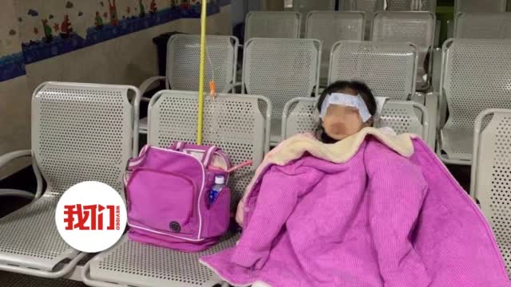

据我和儿子长期出去锻炼得出的结论：一年级孩子持续跑步大概极限在300-400米，再多就会心脏有痛感。轻松的走跑结合2公里正常耗时大概在20-30分钟。不过无论如何，体罚一年级孩子的老师不会是什么好老师。
//@新京报我们视频:【#警方通报教师涉嫌体罚学生#：发帖人承认其女儿因遭体罚吐血、凌晨2时被老师威胁殴打、送老师6万元等情节系其为扩大影响而故意编造的谎言】（来源@广州白云公安） 查看图片@新京报我们视频:【#广州教育局回应教师涉嫌体罚学生#】5月30日，网友“小岛里的大海”举报称，她患有哮喘症的女儿于2019年12月10日被班主任罚跑10圈后出现吐血、手抖等症状，至今未好转，报警及向学校反映后，刘姓班主任也未得到相关处理。30日下午，白云区教育局发文称，已联合公安等部门成立调查组介入调查。新京报我们视频的秒拍视频 826万次播放 01:42